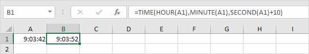
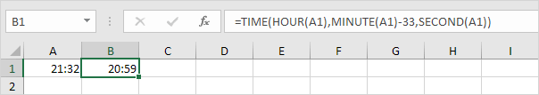

Tambah atau Kurangi Waktu
Tambahkan Jam, Menit, dan Detik | Tambahkan Waktu | Kurangi Menit | Perbedaan waktu
Gunakan fungsi TIME di Excel untuk menambah atau mengurangi jam, menit dan detik. Untuk menambahkan waktu di Excel, cukup gunakan fungsi SUM.
Tambahkan Jam, Menit, dan Detik
Ingat, untuk memasukkan waktu, gunakan ":" (titik dua).
-
Masukkan waktu ke dalam sel A1.

-
Untuk menambahkan 2 jam 30 menit ke waktu ini, masukkan rumus yang ditunjukkan di bawah ini.

Penjelasan: fungsi TIME memiliki 3 argumen. Pertama, gunakan HOUR, MINUTE dan SECOND untuk membuat waktu yang dimasukkan di sel A1. Selanjutnya, tambahkan
2 jam 30 menit.
Untuk mengubah format Waktu, jalankan langkah-langkah berikut.
- Pilih sel B1.
- Klik kanan, lalu klik Format Cells (atau tekan CTRL + 1).
-
Dalam daftar Kategori, pilih Waktu, lalu pilih format Waktu.

-
Klik Oke.

-
Masukkan waktu ke dalam sel A1 (gunakan 2 titik dua untuk memasukkan detik).

-
Untuk menambahkan 10 detik ke waktu ini, masukkan rumus yang ditunjukkan di bawah ini.

Catatan: kami mengubah format Waktu menjadi 13:30:55 (lihat langkah 5).
Tambahkan Waktu
Untuk menambahkan waktu di Excel, cukup gunakan fungsi SUM. Untuk menampilkan total lebih dari 24 jam, ubah format Waktu.
-
Misalnya, tugas A membutuhkan 8 jam untuk diselesaikan, tugas B membutuhkan 4 jam dan 30 menit untuk diselesaikan, dll.

-
Untuk menghitung total durasi, cukup gunakan fungsi SUM.

-
Ubah durasi tugas D dari 5 jam menjadi 7 jam.

Untuk menampilkan total lebih dari 24 jam, jalankan langkah-langkah berikut.
- Pilih sel B6.
- Klik kanan, lalu klik Format Cells (atau Ctrl+1).
- Pilih kategori Kustom.
-
Ketik kode format angka berikut: [h]:mm

-
Klik Oke.

Catatan: kunjungi halaman kami tentang format Tanggal dan Waktu untuk mempelajari lebih lanjut tentang topik ini.
Kurangi Menit
Untuk mengurangi jam, menit, atau detik dari suatu waktu, gunakan fungsi TIME (dan HOUR, MINUTE dan SECOND).
-
Masukkan waktu ke dalam sel A1.

-
Untuk mengurangi 33 menit dari waktu ini, masukkan rumus yang ditunjukkan di bawah ini.

Perbedaan waktu
Menghitung perbedaan antara dua kali di Excel bisa jadi rumit.
-
Untuk menghitung selisih antara dua waktu di hari yang sama, cukup kurangi waktu mulai dari waktu berakhir.

Catatan: kami mengubah format Waktu menjadi 13:30 (lihat langkah 5 di bawah " Tambahkan Jam, Menit, dan Detik ").
-
Rumus sederhana ini tidak bekerja jika waktu mulai sebelum tengah malam dan waktu berakhir setelah tengah malam. Waktu Perbedaan rumus di bawah ini selalu bekerja.

-
Rumus di bawah ini menghitung selisih antara dua kali dalam jam sebagai nilai desimal.

Catatan: kunjungi halaman kami tentang Perbedaan Waktu untuk memahami logika di balik rumus ini.